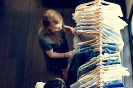
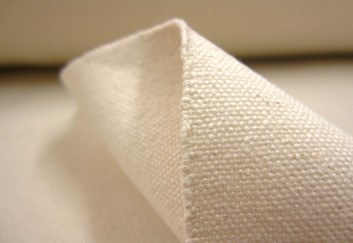
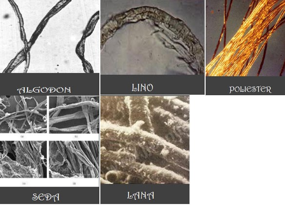
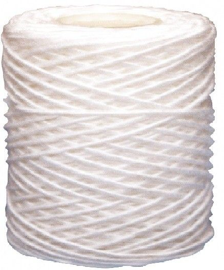
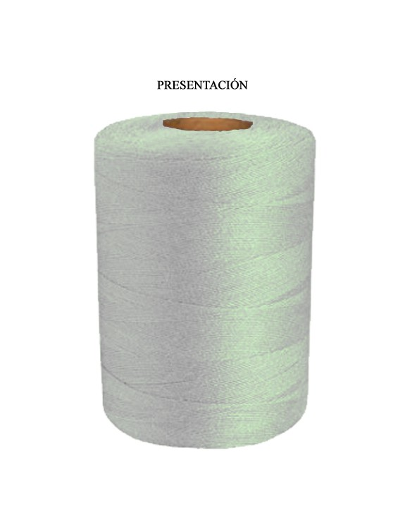
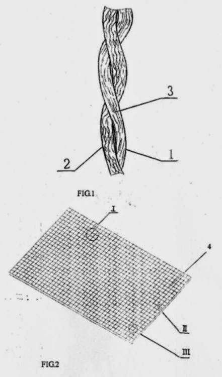
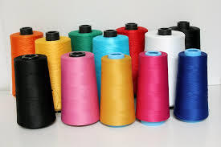

MI PORTAFOLIO DIGITAL
Textil y su clasificacion
Las mezclas
Los hilos y sus clasificaciones
Ligamentos
Cuidado y conservación de productos textiles
Tutorial de Ligamentos (Sarga y tafetán )

La fibra sin duda es la principal unidad fundamental de la
producción de hilos y telas, en cuanto a sus característica
depende sus estructura ,pues, de ella depende el tacto , la
textura y el aspecto que tenga los hilas y las telas cabe
destacar que existe tipos de fibras naturales y artificiales.
Esta fibras se obtiene de la misma naturaleza, utilizando sus
hebra para transformarlas en hilos y estructura planas en la
antigüedad era la protagonista de los materiales textiles ya que
estos materiales eran los únicos que estaban al alcance de los
artesanos textiles que encontraban en tallo ,hojas ,pelos
,metales ,teniendo la oportunidad de transfórmalos en objetos
nuevos en un proceso lento y delicado ya que era la única que se
encontraba en la naturaleza y que ya estaban trasformada o
convertida en hilos o cuerdas que era la seda , esta fue usada
como modelo para la industria química por su buena calidad y
resistencia lustre y longitud, en estas fibras naturales se
encuentran las minerales, vegetales y la proteica.
En la mineral se encuentra el amianto, oro plata cobre y cristal
de cuarzo, en la natural se encuentra el lino, algodón, ramia,
yute, sisal, rafia, en las proteicas lana y seda .las minerales
como el oro cobre y plata son metales preciosos cuyo proceso
para ser utilizada son parecidos, aunque varían en precio y
demanda, el cristal de cuarzo también conocidos como cristal de
rocas, estos son muy utilizados en diseño de moda para
decoraciones y bordados. Las fibras vegetales estas se extraen
de alguna planta, de la vellosidad de alguna semilla como el
lino, de los tallos como el ramio el cáñamo y el lino, de los
follaje como el sisal y la rafia o del fruto o la cascara como
el coco. Las proteicas: son un conjunto de aquellos materiales y
textiles que son de origen material y están se han utilizado
desde los tiempos prehistóricos como los pelos y las pieles de
distintos animales como la oveja, camello, cabro, llama, entre
otros animales.
Existen métodos para identificar las fibras textiles que son las
inspecciones visuales, prueba de combustión, prueba de mi
croscopio, prueba de solubilidad como los siguientes:
La prueba de combustión: se utiliza para
identificar la composición química e identificar el grupo al que
pertenece y se lleva acabo de la siguiente manera:
Diseccionar el espécimen, tomar los hilos con una pieza, acercar
a la flama y observar lo que ocurre, alejar de la flama y
observar lo que le ocurre , olor que deprende y ver las
características de la ceniza.
Identificación del microscopio: esta se realiza
al observar las fibras para conocer su estructura.

Identificación por disolución o solubilidad:
este proceso se lleva acabo disolviendo la fibra mediante
productos químicos concentrado y es aplicable para fibras
textiles naturales, artificiales y sintéticas
Es increíble cómo saber las mescla de los textiles ,tener en cuenta y tener el conocimiento de como el textil es mezclado para tener mejores resultado y mejor calidad, también es importante saber sus clasificaciones como el algodón y el poliéster es una mezcla que tienen buenos resultado porque tiende a no arrugarse y nos facilita la tarea del planchado y seca muy rápido , también está la mezcla del algodón y acrílica esta tiene mayor resistencia y un buen comportamiento en el lavado, también la lana y la acrílica que es un textil muy conservador , la lana y el poliéster, esta es mi favorita ya que no se arruga y podemos tener resultados como plisados permanente , el acetato y poliamida de ella se puede conseguir una excelente consistencia y la viscosa y el poliéster que es la más económicas de todas.
También podemos encontrar otros resultados como telas elásticas de colores y sublimación única, existe mayor durabilidad en el color de las prendas frente al lavado, luz, agua clorada y agua del mar. Las mescla son muy importante en el mundo del textil ya que sin ella no podemos lograr excelentes resultados en nuestros diseños de vestuarios y gracias a las mezcla podemos crear nuevos efectos de colores, podemos producir mejor tela que tengan mejor funcionamientos, podemos obtener eficiencia en los acabados tener mejor hilatura, mejora la textura ,tacto o aspectos de las telas , para mi entender las mezclas textiles es uno de los mayores descubrimiento en el mundo y es muy importante saber por qué las mezcla del textil, como se comporta cada una y que resultados tener a través de ellas .
El hilo es un conjunto de fibra textil continua o descontinua, que se tuercen juntas alcanzando una gran longitud. Si son fibras de filamento continuo se las denomina hilo continuo, al retorcer las fibras se obtienen hebras más extendidas e hilos más resistentes, a los cuales también se le conoce como hilaza; Sin embargo, si se trata de fibras discontinuas formarán el llamado hilado.
A través de los tiempos podemos ver como los hilos se han desarrollado de diferentes formas artesanal e industrial el artesanal se elabora con las manos y el industrial con máquinas llamadas popularmente peinadoras. El funcionamiento principal de hilos es unir dos o más piezas o arreglar piezas, para una fibra poder ser tomada en cuenta para ser usada en la construcción de hilos, deben cumplir con una serie de requisitos obligatorios y cualidades especificas como: finura longitud, carácter, rizado o torcido, color y brillo, elasticidad, resistencia, elongación en las fibras naturales, afinidad tintórea, etc.
Según su estructura se puede describir los hilos de la siguiente
manera:
Hilos simples:que no es más que la torsión de un
hilo o sin ella en la que se pueden omitir esa torsión en una sola
y específicamente operación de des- torsión.

Hilo retorcido: No es más que un hilo que esta
formado por varios hilos a lo que se le puede llamar compuesto,
porque están torcidos a la misma longitud o distancia.
Hilo cableado: Su principal característica es la
unión de varios hilos compuestos que se encuentran retorcidos, de
los cuales uno se encuentra previamente torcido.

Hilo doblado:: Este hilo se caracteriza por el
resultado de varios hilos agrupados, los cuales pueden ser simples
o cableados. 
Hilo texturizado: Este es un hilo usado en textil el cual es continuo, con torsión o sin él, con uno o varias hebras onduladas. Por consiguiente, tiene un efecto de hinchado. 
Ligamento
Se llama ligamento a la norma de entrecruzarse los hilos de urdimbre
y trama en cada pasada para formar un tejido determinado, existen 3
tipos de ligamentos: ligamento tafetán, ligamento de sarga y
ligamento raso o saten.
Ligamento Tafetán
El ligamento tafetán es el más básico de los tres tipos de
ligamentos para la elaboración de un tejido de calado , El ligamento
tafetán se caracteriza por ser fuerte y resistente, se utiliza tanto
en confección de vestimentas como en tapicería. En el ligamento
tafetán la urdimbre y la trama del tejido son prácticamente del
mismo grosor alineados de modo que forman un patrón simple de punto
de cruz.
Ligamento Sarga
La sarga consiste en un tejido o ligamento que produce línea
diagonales en forma positiva o negativas independientemente o
juantas a la vez. También existe los ligamentos derivados de la
sarga que son: sargas Romanas, Satinas, Sargas Batavias,
interrumpidas, compuesta y quebradas.
Ligamento de satén
El ligamento satén. Este tipo de tejido es de superficie lisa y
brillante con el revés mate y tiene una buena consistencia. Esta
superficie lisa y brillante se consigue gracias a su ligamento,
pasando los hilos de la urdimbre encima de unos cuantos de trama,
con un entrelazado mínimo, es decir, la urdimbre tiene más hilos que
la trama. El satén es suave y brillante por la cantidad de saltos en
el entrelazado que se producen, apareciendo largas pasadas de los
hilos en la superficie.